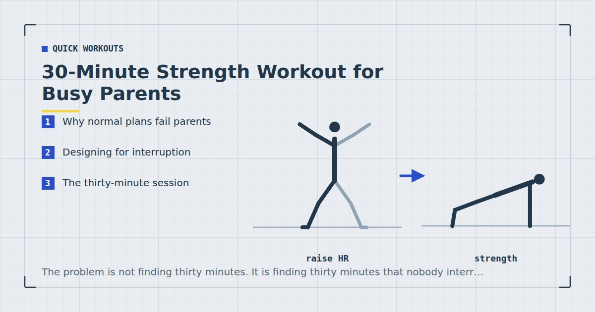

Quick Workouts & Plans
30-Minute Strength Workout for Busy Parents
The problem is not finding thirty minutes. It is finding thirty minutes that nobody interrupts. This session is built to survive being stopped.

Standard training plans assume a block of uninterrupted time. That assumption is doing a lot of quiet work, and for anyone with small children it is simply false.
The failure is not that parents lack thirty minutes. It is that thirty minutes gets broken into four pieces by things that cannot be deferred, and a plan built around continuity does not survive that. This session is built around discontinuity instead.
Why normal plans fail parents
Three specific reasons, all fixable:
Circuits punish interruption. A circuit derives its stimulus partly from continuity. Stop for four minutes in the middle and the round is effectively over. Strength sets do not work that way — a longer rest between sets is nearly harmless, and sometimes better.
Warm-ups get repeated. If you have to restart, a plan with a ten-minute warm-up costs you ten minutes again. A short warm-up is cheaper to repeat.
Floor-heavy sessions are hard to abandon and resume. Getting up mid-set to deal with something, then getting back down, has a friction cost that compounds until you stop bothering.
Designing for interruption
Four design rules follow directly:
- Sets, not circuits. Every exercise is a standalone block. An interruption costs you one set, not a round.
- No fixed rest periods. The rest is however long the interruption took. If that is four minutes, the next set will be slightly better rather than worse.
- Sessions are ordered by priority. If you only complete half, the important half is the half you did.
- Standing before floor. The floor work goes at the end, when you are least likely to need to get up quickly.
Do the exercises in the order written and stop wherever you stop. This is not a session you can complete in the wrong order and still get the intended result — the ordering is the interruption insurance. The first three exercises are the session; everything after is bonus.
The thirty-minute session
Warm up for two minutes: marching, ten easy squats, ten arm circles. Then work down the list. Rest as long as you need, or as long as you are made to.
Bulgarian split squat — 3 × 8–12 each leg
Rear foot on the sofa. The single most valuable exercise here, which is why it is first. Setup in Bulgarian split squats at home.
Push-up — 3 × 8–15
At whichever incline makes that range hard. Sofa arm, counter, floor.
Row — 3 × 10–15
Band anchored in a door, or under a sturdy table. The most-skipped exercise in home training and the one desk-and-carrying-a-child posture most needs — see rows at home.
Single-leg glute bridge — 3 × 10–15 each side
One-second pause at the top.
Pike push-up — 2 × 6–12
The overhead pressing pattern, which nothing else here covers.
Dead bug — 2 × 8–12 each side
Floor work last, deliberately.
Six exercises, sixteen sets. If you get through three exercises, you have trained legs, chest and back — a genuinely complete session by any reasonable standard.
The ten-minute version
On the days when thirty is not available, do the first three exercises for two sets each. That is ten minutes and it covers every major movement pattern.
Having an explicit short version matters more than it sounds. The alternative is deciding in the moment whether a reduced session is worth doing, and that decision reliably goes the wrong way when you are tired. Pre-deciding removes it — the mechanism described in how to stick to a home workout habit.
Training with children in the room
A few things that genuinely help, from doing this badly for a long time:
Position yourself facing them. Sounds trivial. It means you can keep training through the low-level monitoring that would otherwise make you stop.
Accept being climbed on. A toddler on your back during a plank is added load, not a ruined set. Within reason, and obviously not during anything where a sudden shift could hurt either of you — nothing overhead, nothing balancing on one leg.
Use the same spot every time. Children adapt to routine faster than adults do. A consistent corner and time of day gets absorbed as normal within a couple of weeks.
Do not train when you need them to be quiet. Trying to work out during a period that also requires them to settle is setting up a conflict you will lose. There is more on this in how to work out at home with kids around.
On the guilt
Worth saying plainly, because it stops more parents training than any scheduling problem: thirty minutes spent on your own physical health is not time taken from your children.
Adult activity guidance exists because inactivity carries real health consequences,1 and those consequences do not pause during the years when you are busiest. Three half-hours a week is roughly one and a half per cent of your waking time.
There is also a reasonable case, though harder to evidence, that children who see exercise as an ordinary part of adult life absorb something useful from that.
When you get four minutes, not thirty
Some weeks the thirty-minute session does not appear at all, and neither does the ten-minute one. The instinct is to write the week off. There is a better option, and it is more defensible than it sounds.
Muscle growth tracks weekly training volume rather than how that volume was packaged into sessions,2 and higher training frequencies perform at least as well as lower ones when weekly volume is held equal.3 Taken together, that means three or four scattered four-minute blocks across a day are not obviously worse than one sixteen-minute session, provided the sets are hard.
In practice that looks like: one set of split squats while the kettle boils, a set of push-ups against the kitchen counter while something is in the oven, a set of rows in a door frame before you go upstairs. Two or three of those a day, most days, is a genuine weekly volume.
Two caveats worth keeping. The sets have to be close to hard — a casual set of ten easy squats is movement, not training. And this works as a fallback for bad weeks rather than as a permanent structure, because it makes progression very difficult to track. When the thirty-minute session is available, do that instead.
Making it harder as you get fitter
The session above will stop being difficult within about eight weeks if you are training consistently, and the temptation at that point is to add exercises. Resist it: a longer session is exactly the wrong direction for this particular set of constraints.
Instead, make the same six movements harder. Slow the lowering phase of every repetition to a three-second count, which costs no extra session time at all and is the cheapest available progression. Then elevate the front foot on split squats, lower the push-up surface a step, and move the rows to a lower bar or a more horizontal body angle. Finally, take the last set of each exercise genuinely close to failure rather than stopping when it becomes uncomfortable, since with a fixed bodyweight load effort is doing the work that added weight would otherwise do.
The full ladder for each movement pattern is in bodyweight exercise progressions. What matters here is that every one of those changes keeps the session at thirty minutes and keeps the interruption-tolerance intact.
Where to go next
If you want this in a structured week, the three-day split uses the same movements. For the noise problem that comes with training while children sleep, see quiet home workouts.
Frequently asked questions
How can parents find time to work out at home?
The more useful change is designing sessions that survive interruption rather than trying to protect an uninterrupted block. Use standalone sets instead of circuits, let the rest periods be whatever the interruptions dictate, and order the exercises so that a half-finished session is still a complete one.
What is the best workout for busy parents?
A strength session built from six exercises done as separate sets, ordered by priority. Split squats, push-ups and rows first, since those three alone constitute a complete session if you get no further.
Can I work out with my kids in the room?
Yes, and most parents end up doing so. Position yourself facing them, keep to the same spot and time so it becomes routine, and avoid anything overhead or balance-dependent if a small child might climb on you mid-set.
How long should a parent workout be?
Thirty minutes when possible, with an explicit ten-minute version for days when it is not. Deciding the short version in advance matters, because deciding in the moment whether a reduced session is worthwhile usually ends in skipping it.
Is 30 minutes three times a week enough exercise?
It comfortably meets the muscle-strengthening half of adult activity guidance. For the aerobic half, add walking on the days between sessions.
Sources and further reading
- World Health Organization. WHO Guidelines on Physical Activity and Sedentary Behaviour. 2020.
- Schoenfeld BJ, Ogborn D, Krieger JW. “Dose-response relationship between weekly resistance training volume and increases in muscle mass: A systematic review and meta-analysis.” Journal of Sports Sciences, 2017;35(11):1073–1082. PubMed.
- Schoenfeld BJ, Ogborn D, Krieger JW. “Effects of Resistance Training Frequency on Measures of Muscle Hypertrophy: A Systematic Review and Meta-Analysis.” Sports Medicine, 2016;46(11):1689–1697. PubMed.
- NHS. Physical activity guidelines for adults aged 19 to 64.
- NHS. Strength and Flex exercise plan.
- MedlinePlus, U.S. National Library of Medicine. Exercise and Physical Fitness.
Comments
Comments are not enabled yet. Add a hosted comment embed (Disqus, Commento, Giscus) inside this container when you are ready.